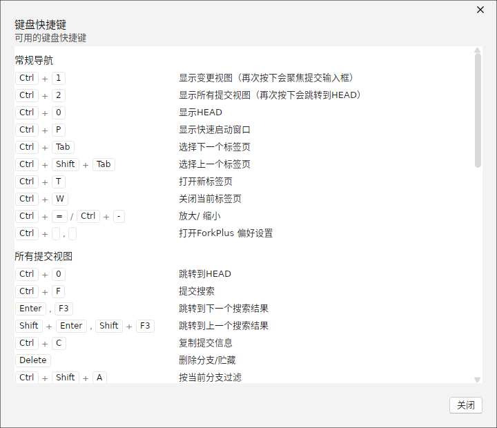

ForkPlus 提供了完整的键盘快捷键体系，覆盖视图导航、提交历史、变更暂存、仓库操作与仓库管理。可在应用内打开「键盘快捷键」窗口随时查阅。

图 8-1 「键盘快捷键」窗口：按类别列出所有快捷键及其用途
说明：「键盘快捷键」窗口只读列出全部快捷键，按 Esc 或「关闭」按钮即可退出。
常规导航
| 快捷键 | 功能 |
|---|
| Ctrl+1 | 显示「变更」视图（再次按下聚焦提交输入框） |
| Ctrl+2 | 显示「所有提交」视图（再次按下跳转到 HEAD） |
| Ctrl+0 | 显示 HEAD |
| Ctrl+P | 显示「快速启动」窗口 |
| Ctrl+Tab | 选择下一个标签页 |
| Ctrl+Shift+Tab | 选择上一个标签页 |
| Ctrl+T | 打开新标签页 |
| Ctrl+W | 关闭当前标签页 |
| Ctrl+= / Ctrl+- | 放大 / 缩小 |
| Ctrl+, | 打开 ForkPlus 偏好设置 |
所有提交视图
| 快捷键 | 功能 |
|---|
| Ctrl+0 | 跳转到 HEAD |
| Ctrl+F | 提交搜索 |
| Enter / F3 | 跳转到下一个搜索结果 |
| Shift+Enter / Shift+F3 | 跳转到上一个搜索结果 |
| Ctrl+C | 复制提交信息 |
| Delete | 删除分支 / 贮藏 |
| Ctrl+Shift+A | 按当前分支筛选 |
变更视图
| 快捷键 | 功能 |
|---|
| Ctrl+Enter | 提交 |
| Ctrl+Shift+Enter | 提交并推送 |
| Ctrl+1 | 聚焦提交消息输入框 |
| Ctrl+F | 筛选 |
| Enter / Ctrl+Shift+S | 暂存 / 取消暂存选中文件（或行） |
| Ctrl+Alt+Shift+S | 暂存 / 取消暂存全部文件 |
| Backspace / Ctrl+Shift+D | 丢弃选中的文件（或行） |
| Ctrl+O | 打开选中的文件 |
| Ctrl+D | 用外部差分工具打开选中文件 |
| Ctrl+C | 复制选中文件的完整路径 |
仓库操作
| 快捷键 | 功能 |
|---|
| F5 | 刷新 |
| Ctrl+Shift+N | 初始化新仓库 |
| Ctrl+N | 克隆新仓库 |
| Ctrl+G | 初始化 git mm 仓库 |
| Ctrl+O | 打开仓库 |
| Ctrl+Shift+F | 抓取（Fetch） |
| Ctrl+Alt+Shift+F / Ctrl+点击 | 快速抓取（Quick Fetch） |
| Ctrl+Shift+L | 拉取（Pull） |
| Ctrl+Alt+Shift+L / Ctrl+点击 | 快速拉取（Quick Pull） |
| Ctrl+Shift+P | 推送（Push） |
| Ctrl+Alt+Shift+P / Ctrl+点击 | 快速推送（Quick Push） |
| Ctrl+Shift+B | 新建分支 |
| Ctrl+Shift+T | 新建标签 |
| Ctrl+Shift+H | 创建贮藏（Stash） |
| Ctrl+Alt+O | 在文件资源管理器中打开 |
| Ctrl+Alt+T | 在终端中打开 |
仓库管理器
| 快捷键 | 功能 |
|---|
| F2 | 重命名仓库 |
| Delete | 移除仓库 |
| Enter | 打开仓库 |
小贴士：「抓取 / 拉取 / 推送」同时按住 Ctrl+Alt+Shift 加对应字母可执行跳过确认的「快速」版本；在变更视图中选中 diff 选区后按 Enter 可快速暂存/取消暂存选中行。